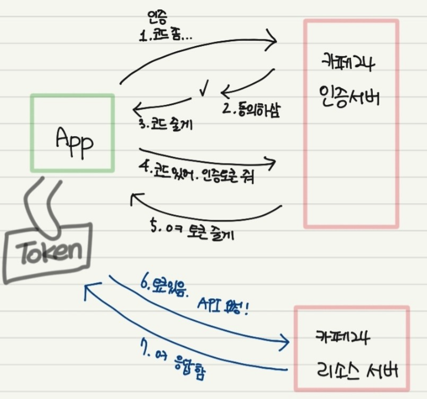

6 아카라라이프 자사몰(카페24) API 연동
6.1 인증 절차 및 API 활용
6.1.1 인증 절차 및 API 개요

[참고 사이트]
#Client ID/Secret 얻는 방법: https://velog.io/(yl9517/Cafe24-Authentication?)-#%EC%9D%B8%EC%A6%9D%EB%B6%80%ED%84%B0-API-%ED%98%B8%EC%B6%9C%EA%B9%8C%EC%A7%80
6.1.3 Access Token 획득
위에서 획득한 authorization code 사용
import requests
mall_id = "xxxxxxx"
client_id = "xxxxxxxx"
client_secret = "xxxxxx"
state = "12345"
redirect_uri = "https://xxxx.com"
scope = "mall.read_product,mall.read_application,mall.write_application,mall.read_community,mall.write_community"
authorization_code ="xxxxxxxx"
# 기본 인증 정보 생성
basic_auth = f"{client_id}:{client_secret}"
encoded_basic_auth = base64.b64encode(basic_auth.encode()).decode()
# 요청 URL 및 데이터
url = f"https://{mall_id}.cafe24api.com/api/v2/oauth/token"
headers = {
'Authorization': f"Basic {encoded_basic_auth}",
'Content-Type': 'application/x-www-form-urlencoded'
}
data = {
'grant_type': 'authorization_code',
'code': authorization_code,
'redirect_uri': redirect_uri
}
# POST 요청 보내기
response = requests.post(url, headers=headers, data=data)
# 응답 확인
print(response.json())
6.1.4 Token 갱신하기
import requests
import base64
# 변수 설정
mall_id = "xxxxxxx"
client_id = "xxxxxxxx"
client_secret = "xxxxxx"
# 기본 인증 정보 생성
basic_auth = f"{client_id}:{client_secret}"
encoded_basic_auth = base64.b64encode(basic_auth.encode()).decode()
# 요청 URL 설정
url = f"https://{mall_id}.cafe24api.com/api/v2/oauth/token"
headers = {
'Authorization': f"Basic {encoded_basic_auth}",
'Content-Type': 'application/x-www-form-urlencoded'
}
# refresh.csv 파일에서 refresh token 값을 읽어옴
with open('refresh.csv', 'r') as file:
refresh_token = file.read().strip()
refresh_token ="l2S54kScJFRrljTKxlZE8B"
# 요청 데이터 설정
data = {
'grant_type': 'refresh_token',
'refresh_token': refresh_token
}
# POST 요청 보내기
response = requests.post(url, headers=headers, data=data)
# access_token 및 refresh_token 값 읽어오기
if response.status_code == 200:
response_data = response.json()
access_token = response_data['access_token']
refresh_token = response_data['refresh_token']
print("Access Token:", access_token)
print("Refresh Token:", refresh_token)
print(response.json())
# refresh token을 CSV 파일에 저장
with open('refresh.csv', 'w') as file:
file.write(refresh_token)
else:
print("Error:", response.text)
6.1.5 게시판 읽어오기 - 상품 게시판
import requests
import re
import datetime
from bs4 import BeautifulSoup
import pandas as pd
bulletin = 6
url = f"https://aqarakr.cafe24api.com/api/v2/admin/boards/{bulletin}/articles"
interval=60 # 오늘부터 며칠 전까지?
payload = {}
files = {}
headers = {
'Authorization': f'Bearer {access_token}',
'X-Cafe24-Api-Version': '2024-03-01',
'Content-Type': 'application/json',
'Cookie': 'xxxxxxxxxxx'
}
# 현재 날짜를 가져옵니다.
current_date = datetime.datetime.now()
# end_date로부터 7일 전의 날짜를 구합니다.
start_date = current_date - datetime.timedelta(days=interval)
# 날짜를 원하는 형식으로 포맷팅합니다.
start_date_str = start_date.strftime('%Y-%m-%d')
end_date_str = current_date.strftime('%Y-%m-%d')
current_date = datetime.datetime.now().strftime('%Y-%m-%d')
params = {
'start_date': start_date_str,
'end_date': end_date_str
}
response = requests.request("GET", url, headers=headers, data=payload, files=files,params=params)
data = response.json()
articles_data = []
for article in data['articles']:
# 각 기사의 날짜 가져오기
article_date = article['created_date']
# 해당 날짜의 기사 내용 가져오기
content = article['content']
text = BeautifulSoup(content, "html.parser").get_text()
articles_data.append({'date': article_date, 'text': text})
#print(f"Date: {article_date}")
#print(text)
df = pd.DataFrame(articles_data)
print(df.head())6.1.6 게시판 읽어오기 - 1:1 게시판
bulletin = 9
url = f"https://aqarakr.cafe24api.com/api/v2/admin/boards/{bulletin}/articles"
interval=60 # 오늘부터 며칠 전까지?
payload = {}
files = {}
headers = {
'Authorization': f'Bearer {access_token}',
'X-Cafe24-Api-Version': '2024-03-01',
'Content-Type': 'application/json',
'Cookie': 'ECSESSID=5d169e847b0b49d2ff41047129114582'
}
# 현재 날짜를 가져옵니다.
current_date = datetime.datetime.now()
# end_date로부터 7일 전의 날짜를 구합니다.
start_date = current_date - datetime.timedelta(days=interval)
# 날짜를 원하는 형식으로 포맷팅합니다.
start_date_str = start_date.strftime('%Y-%m-%d')
end_date_str = current_date.strftime('%Y-%m-%d')
current_date = datetime.datetime.now().strftime('%Y-%m-%d')
params = {
'start_date': start_date_str,
'end_date': end_date_str
}
response = requests.request("GET", url, headers=headers, data=payload, files=files,params=params)
data = response.json()
articles_data = []
for article in data['articles']:
# 각 기사의 날짜 가져오기
article_date = article['created_date']
# 해당 날짜의 기사 내용 가져오기
content = article['content']
text = BeautifulSoup(content, "html.parser").get_text()
articles_data.append({'date': article_date, 'text': text})
#print(f"Date: {article_date}")
#print(text)
df = pd.DataFrame(articles_data)
print(df.head())6.2 주요 코드 분석
6.2.1 사용 라이브러리
requests, base64, dotenv, datetime, BeautifulSoup, pandas, matplotlib, konlpy 등 라이브러리:
requests: 외부 API에 HTTP 요청을 보내고 응답을 받아오는데 사용된다.
base64: 기본 인증에 필요한 클라이언트 ID와 시크릿을 Base64로 인코딩하는 데 사용된다.
dotenv: 환경 변수 파일(.env)에서 설정값을 불러오기 위해 사용된다.
datetime: 날짜 및 시간 관련 처리를 위해 사용된다.
BeautifulSoup: HTML에서 텍스트를 추출하는 데 사용된다.
pandas: 데이터를 테이블 형태로 저장하고 처리하기 위한 데이터프레임 라이브러리이다.
matplotlib: 그래프와 시각화를 그리기 위해 사용된다.
konlpy: 한국어 자연어 처리를 위한 라이브러리이다.
Counter: 단어 빈도수 계산을 위해 사용된다.
6.2.2 기본 인증 정보 생성
basic_auth = f"{cafe24_client_id}:{cafe24_client_secret}"
encoded_basic_auth = base64.b64encode(basic_auth.encode()).decode()- cafe24_client_id, cafe24_client_secret: dotenv로부터 불러온 API 접근에 필요한 인증 정보를 사용하여 Base64로 인코딩한다. 이 인증 정보를 사용해 API에 접근한다.
6.2.3 날짜 범위 설정 및 API 요청
current_date = datetime.datetime.now()
start_date = current_date - datetime.timedelta(days=params_interval)
params = {'start_date': start_date_str, 'end_date': end_date_str, 'limit': 100}날짜 범위 설정: 현재 날짜에서 사용자 입력에 따라 지정된 일수(params_interval) 만큼 이전 날짜를 계산합니다.
API 요청 파라미터: 지정된 날짜 범위와 다른 매개변수를 API 요청에 포함시킵니다.
6.2.4 HTML 데이터 처리 및 텍스트 추출
content = article['content']
filtered_text = BeautifulSoup(content, "html.parser").get_text()- BeautifulSoup: 응답받은 HTML 형식의 데이터를 파싱하여, 텍스트를 추출합니다. 여기서는 각 게시물의 본문 내용을 필터링하여 텍스트만 추출합니다.